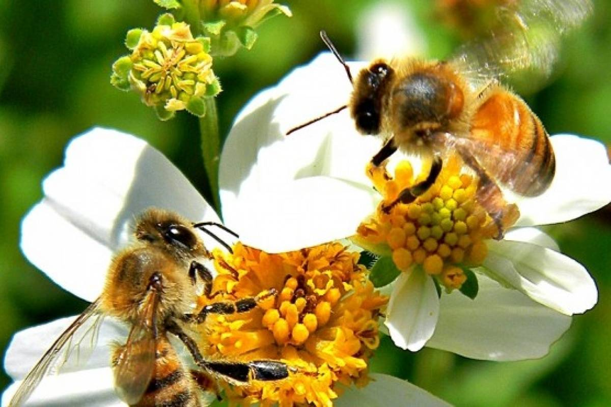
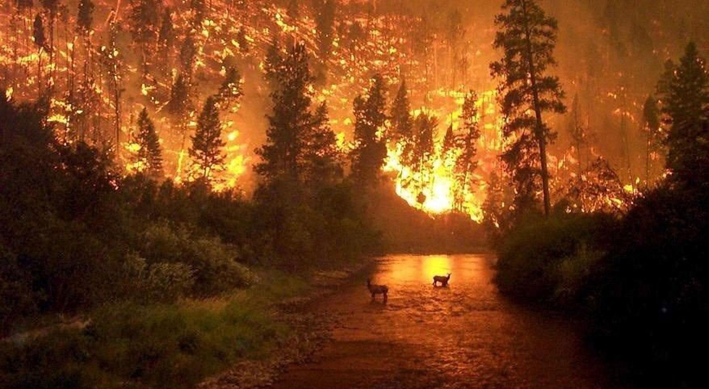
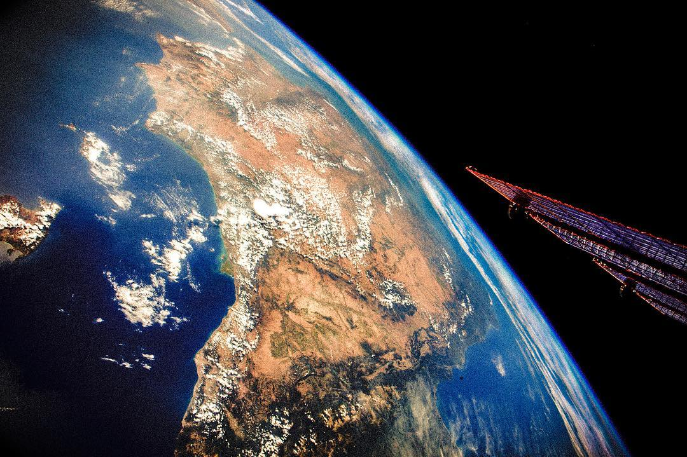

No es menor lo que debemos afrontar. Nunca la humanidad tuvo estos desafíos y no podemos seguir haciéndonos los
tontos.
Las características que ha dado lugar al inicio de el Antropoceno se han agravado y no parecería que fueran a
cambiar, o mejorar.
Ya no es necesario que científicos o pensadores le digan a la gente que el cambio climático es un hecho.
Lo ven y lo sienten con sus propios sentidos.
imperativo que afrontemos las causas y consecuencias del consumo de recursos,
que ha llegado al punto de
Déficit de Recursos Naturales.
Esto significa que la humanidad consume recursos más rápido de lo que el planeta es capaz de generarlos.
No se necesita ser una mente brillante para proyectar que si toda la humanidad consumiera recursos (alimento,
agua, energía, etc) a la velocidad de los países más desarrollados y, tomando ese universo, hacemos foco sobre
su sector más rico, ya no habría recursos suficientes.
El paradigma civilizatorio que ha imperado tiene como premisa que todo lo que nos rodea es una fuente
inagotable de recursos y que pertenecen a la especie.
Con la inevitable consecuencia de la desaparición de especies (animales y vegetales), bosques, lagos, etc.
En efecto, el aumento del consumo fuerza la extracción de los recursos para producir lo que requiere la
población.
El proceso es bastante sencillo de ver.
Tomemos por ejemplo la producción de alimentos: Para satisfacer la demanda se eliminan bosques, montes y
humedales con el objetivo de aumentar el territorio para el agro y la ganadería.
La primera consecuencia de está transformación de la biosfera es la reducción que tiene el planeta para
la
absorción del dióxido de carbono CO2 y así mitigar las emisiones antropogénicas que han disparado el
calentamiento global y la
acidez de las aguas.
La segunda es el corrimiento de la frontera natural entre especies, haciendo que aquellas que no
desaparezcan
cohabiten con el ser humano en el mismo hábitat, transformándose en vectores de microorganismos. Esto hace que
tengamos contacto como especie con otras con las que hemos tenido poca o nula interacción.
Los virus como los coronavirus son una consecuencia de esto y ha pasado siempre que al tener contacto con
organismos desconocidos para nuestro sistema inmunológico nos afectan de forma importante.
Lo significativo es
que en las últimas décadas esta situación se repite aceleradamente
A esto se le suma que no solo es suficiente con aumentar el territorio sino que además es necesario la
utilización de agroquímicos que solo permite el desarrollo de aquellos vegetales modificados genéticamente para
resistir ese químico, todo lo demás muere.
Es obvio que esto destruye el hábitat donde viven miles de especies de todo tipo: vegetales, animales e
insectos.

¿Se alcanza a ver la complejidad del problema?
El crecimiento exponencial de la población mundial hace insostenible el paradigma civilizatorio que ha imperado
durante, por lo menos, los últimos 200 años.
Desforestamos, desmontamos enormes cantidades de territorios pero aún así miles de millones de habitantes sufren
o mueren de hambre.
Desde el inicio de la era industrial las emisiones antropogénicas de CO2 se han disparado a niveles
exponenciales. Hasta ahora los océanos y los sumideros terrestres de carbono han logrado absorber hasta el 90%
de estas emisiones.
Pero últimos estudios han demostrado que existe un punto de inflexión de temperatura donde los sumideros de
carbono cambiarían su signo, pasarían a ser fuente de carbono y que este punto se alcanzará en
solo 20 a 30 años
Estos estudios son conservadores, ya que se basan en la premisa de que se modificarán las condiciones que
están
provocando este escenario.
Algo que sabemos largamente que no es así.

Ante este escenario ¿Como enfrentar estos desafíos?
Crecimiento de la población mundial ¿hay que controlarla? ¿Es posible? ¿Tiene sentido?
¿Es posible otro modelo de producción? En este área hay que discutir desde la generación de energía a la
construcción de viviendas.
Por ahora no ha cambiado un ápice el paradigma. No se ha llevado a cabo ni una acción para evitar las
consecuencias del cambio climático pero sí se ha desarrollado una semilla
resistente a la sequía.
Aclaro que no me parece mal per sé el desarrollo de la semilla, el tema es que si no se modifican las
condiciones que provocan las sequías, inundaciones, etc. A largo plazo de poco va a servir la semilla.
Es imperativo que el problema sea abarcado en forma global, pero en el sentido real de la palabra y no en su
significado financiero y económico.
Debemos entender y finalmente aceptar que
nuestro futuro está irremediablemente ligado al futuro de nuestro
planeta y su biosfera
Parece ridículo tener que expresarlo, pero funcionamos como si no lo supiéramos.
La especie solo tiene futuro
si
la biosfera tiene futuro
¿De verdad no lo podemos entender?
Es todo un mismo problema. Se necesita recursos tanto para generar energía como para la vivienda donde se va a
consumir esa energía.
El agua que se necesita para cultivar también se necesita para los habitantes de aquella casa.
Las viviendas se construyen sobre terrenos que también necesita la agroindustria, la ganadería o una represa.
El mundo es uno solo.
La solución para la generación de energía no está divorciada de la producción de alimentos, la construcción de
barrios y ciudades o el crecimiento de la población.
Si entendemos esto, es posible que en forma colectiva, con compromiso y perseverancia podamos
darle un futuro, no solo a futuras generaciones, si no ya, a nuestra juventud.

Volver arriba